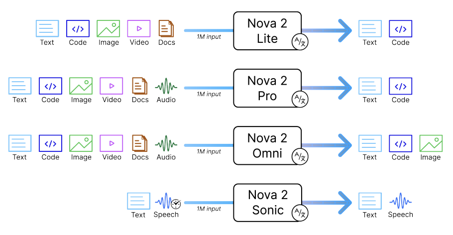
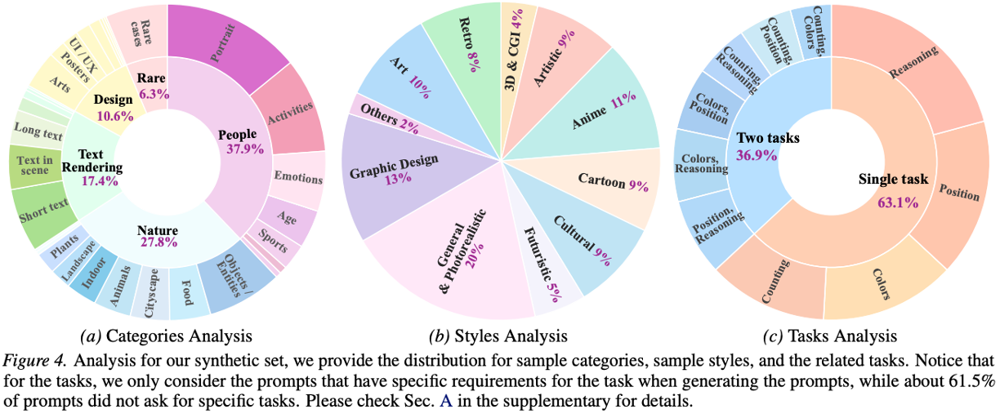
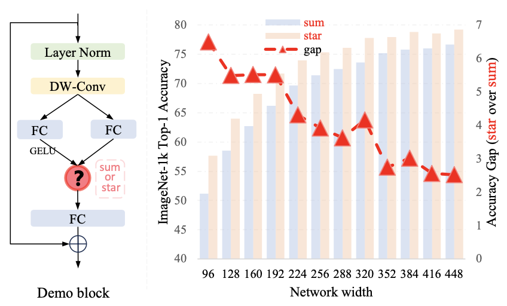
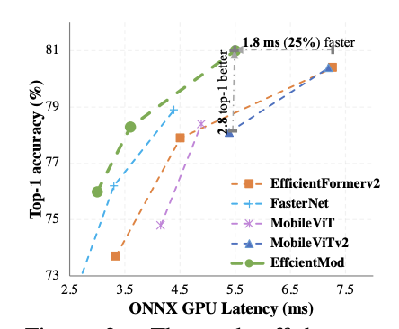
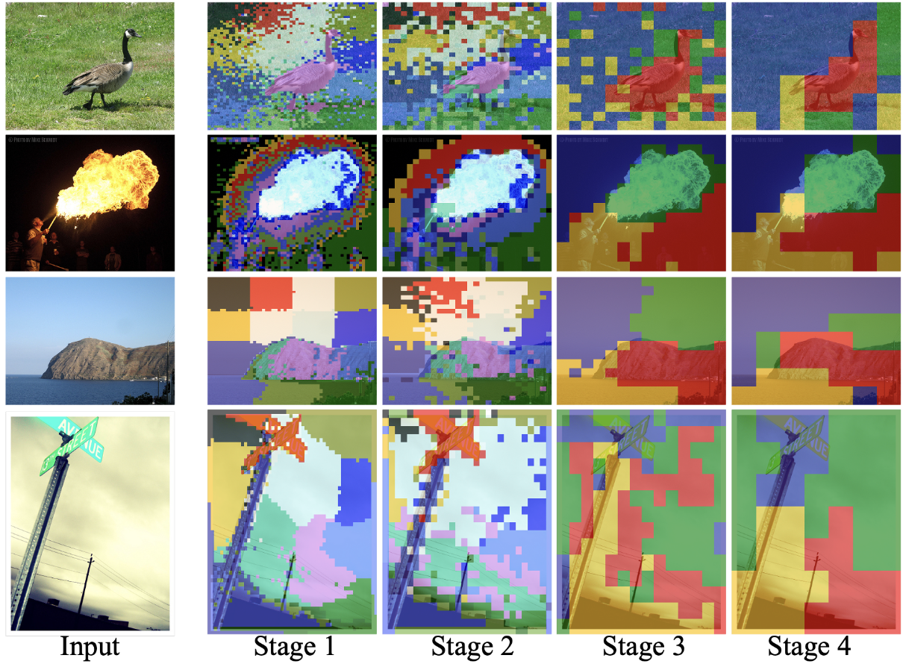
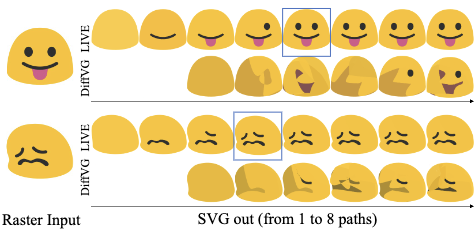

About
I am an Applied Research Scientist at Amazon AGI Foundation, working on the Nova 2 project, focusing on multimodal and visual generation.
I received my Ph.D. from the College of Engineering at Northeastern University, advised by Prof. Yun Raymond Fu in the SMILE Lab. Before that, I spent two years in the Department of Computer Science & Engineering at the University of North Texas, working with Prof. Song Fu. I received my B.S. and M.S. degrees from Nanjing Forestry University, China.
My research interests include Model Efficiency Multimodal LLMs Generative AI Visual Generation
I did internships at Bell Labs eBay Microsoft Adobe Meta GenAI Thanks to all my mentors and collaborators for the guidance and help, always appreciate.
Experience
Services
Honors and Awards
- 2023 Outstanding Reviewer, CVPR
- 2022 Outstanding Reviewer, NeurIPS
- 2022 Academic Technology Scholar, Northeastern University
- 2020 Best Student Paper, ICME
- 2019 Best Paper, SEC
Selected Publications [Full Google Scholar]






